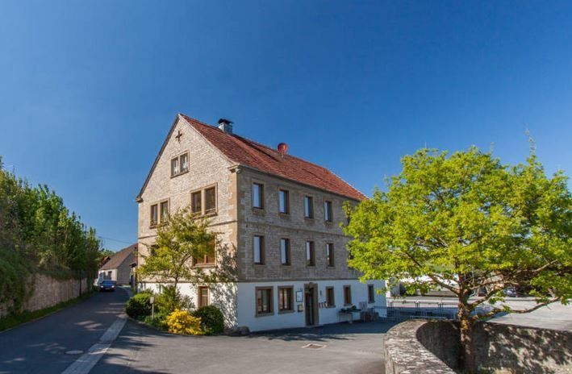
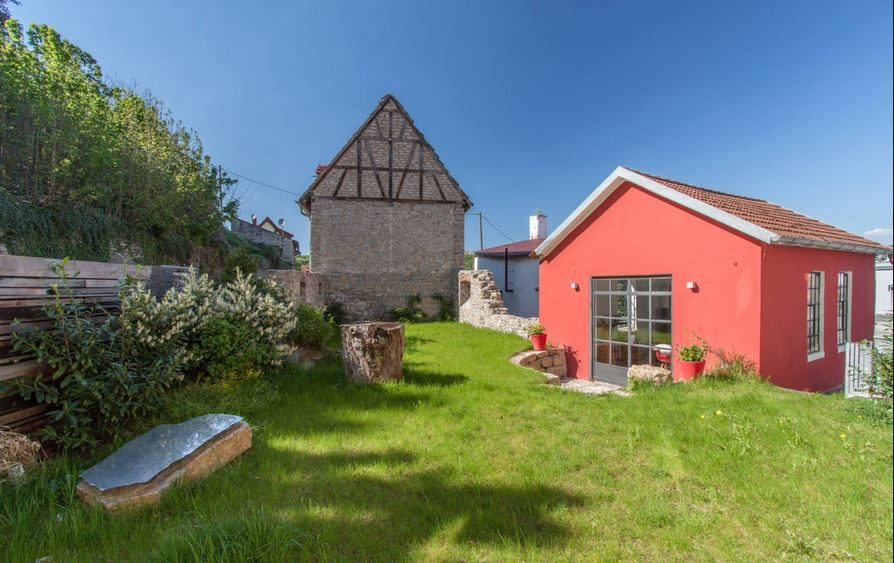
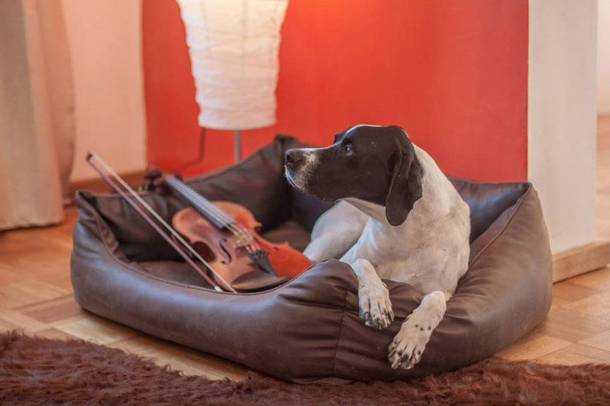
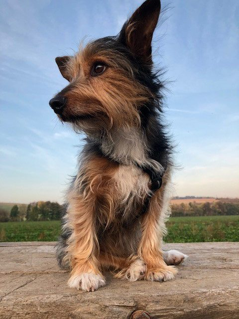
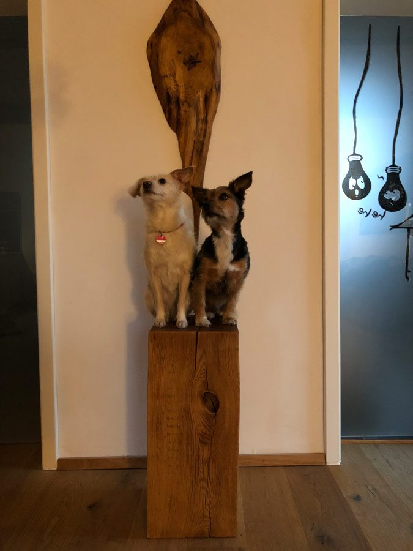

Elefant
Thüngen · Schlossberg
65 m² · 1 Schlafzimmer · bis 6 Gäste
Wohnung ansehen · Preis auf Anfrage

Wohnen am Schlossberg: großzügige Wohnungen für Familien, Wanderer und Hundefreunde – 25 km von Würzburg, mitten im Fränkischen Weinland.
Thüngen · Schlossberg
65 m² · 1 Schlafzimmer · bis 6 Gäste
Wohnung ansehen · Preis auf Anfrage
Thüngen · Schlossberg
65 m² · 1 Schlafzimmer · bis 6 Gäste
Wohnung ansehen · Preis auf Anfrage
Thüngen · Schlossberg
65 m² · 1 Schlafzimmer · bis 4 Gäste
Wohnung ansehen · Preis auf Anfrage
Thüngen · Haus Kämpf
65 m² · 1 Schlafzimmer · 2 Gäste
Wohnung ansehen · Preis auf Anfrage


Die Wohnungen am Schlossberg sind absolut ruhig gelegen, hell und großzügig – eingerichtet mit Unikatmöbeln aus Eiche.
Über einen Steg über den kleinen Bach Wern erreichen Sie den Garten. Malerisch, mit kleinem Wasserfall, fließt die Wern noch immer unter dem Sägewerksgebäude hindurch. Nicht selten sieht man einen Silberreiher auf der Suche nach Bachforellen, und eine Wildgänsefamilie brütet jedes Jahr im alten Stock der Schlossanlage.
Raus in die frische Natur, die voller gemeinsamer Abenteuer steckt: Wiesen, Wald und Weinberge beginnen direkt am Ort.



Im Herzen der Weinregionen zwischen Spessart, Rhön, Steigerwald und Taubertal treffen Geselligkeit und Kulturreichtum aufeinander.
Verkosten Sie bei einer Wanderung oder einer Radtour entlang des Werntal-Radwegs ein Glas Frankenwein direkt in den Weinbergen – los geht es direkt an der Ferienwohnung. Empfehlenswerte Ziele sind die Burgruine Homburg bei Gössenheim, das Edelweiß bei Karlstadt mit Klettersteig, die Karlsburg über dem Main oder das Weindorf Volkach. Würzburg liegt 25 km entfernt, Bamberg etwa 85 km.
Alle AusflugstippsIm Werntal nordwestlich von Würzburg – mit dem Auto rund eine halbe Stunde in die Stadt.
Schematische Karte. Kartendaten © OpenStreetMap-Mitwirkende.
Schreiben Sie uns Ihren Wunschzeitraum – wir antworten persönlich mit Verfügbarkeit und Preis. Ohne Servicegebühr.